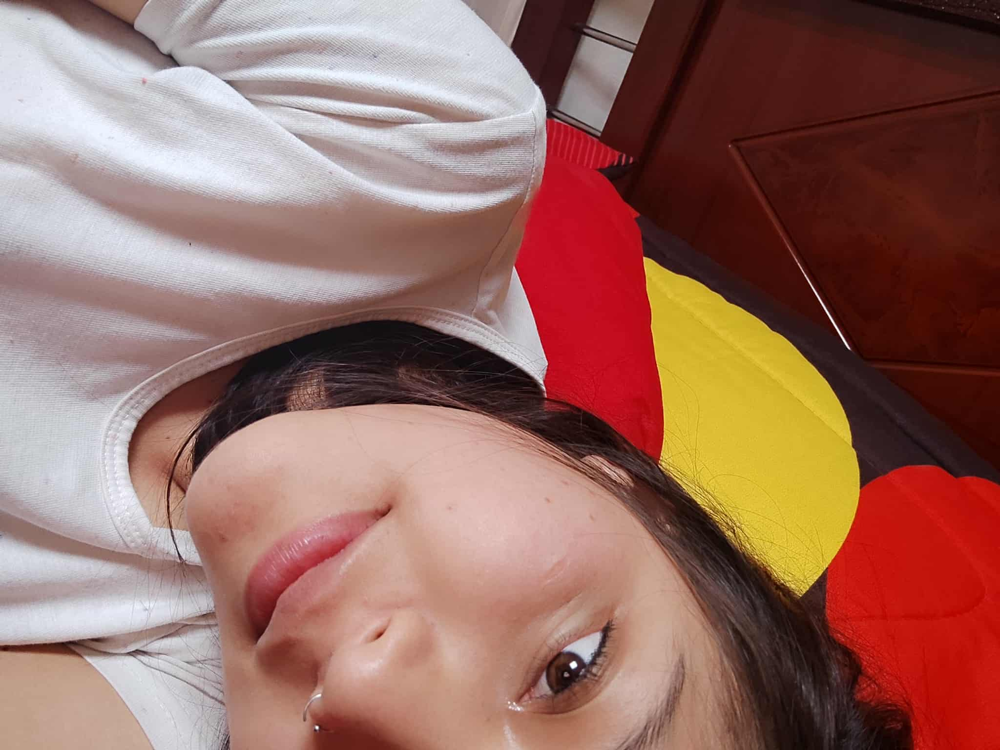

Nunca te olvides que siempre voy a estar contigo, en las buenas, en las malas (sobre todo en las malas jaja), pero jamas te voy a querer soltar flaquita hermosa, te quiero con mi vida.
Primero que nada escucha este feel que siento tan hermoso tan distinto que siento cuando pienso en ti, cuando me siento relajado. Cuando sabes que soy el chico mas dramatico pero cariñoso jaja pero dejando eso del lado, eres el sentimiento mas lindo que voy a sentir en mi vida flaca.
Segundo, esta foto es del 12 de febrero del año pasado, cuando quise borrar todas las fotos esta tiene algo especial, tus ojos parecen que me miran, que brillan que no me da el valor de borrarlo. No me entiendo como es posible que unos ojos y una sonrisa me tengan desorbitado, te amo con el mundo te juro.

Nunca olvides que eres muy fuerte, que eres muy capaz
Frases pa' ti flaquita jsjs
ok esta la saque de la biblia y es la ma dura que he visto.
Romanos 8:11: "Y si el Espíritu de aquel que levantó de los muertos a Jesús
mora en vosotros, el que levantó de los muertos a Cristo Jesús vivificará
también vuestros cuerpos mortales por su Espíritu que mora en vosotros."
Asere quiere decir que no importa que tan bajo te caigas mi niña, Dios
siempre sabrá qué hacer contigo y conmigo, algo que haga para los 2...
Por favor nunca te llegue a sentir mal mi blanquita que te quiero ver feliz y contenta.
Te amo con mi alma mi niña, jamas lo olvides.
Gracias por existir Gill. Por ti encontré el significado de
Corintios 13: 4 a 7. Esa no te la pongo jajajaja, te la encargo que lo busques
y cada que te cuestiones si te quiero asere, piensa en ese versiculo.
Perdóname si esta mierda es muy simple, aún no me enseñan a diseñar ni HTML jaja,
pero lo hago con todo el corazón flaca. Poco a poco va a mejorar mi codigo y en si la pagina.
cuando tenga tiempo lo hare te lo prometo. Te mereces todo.